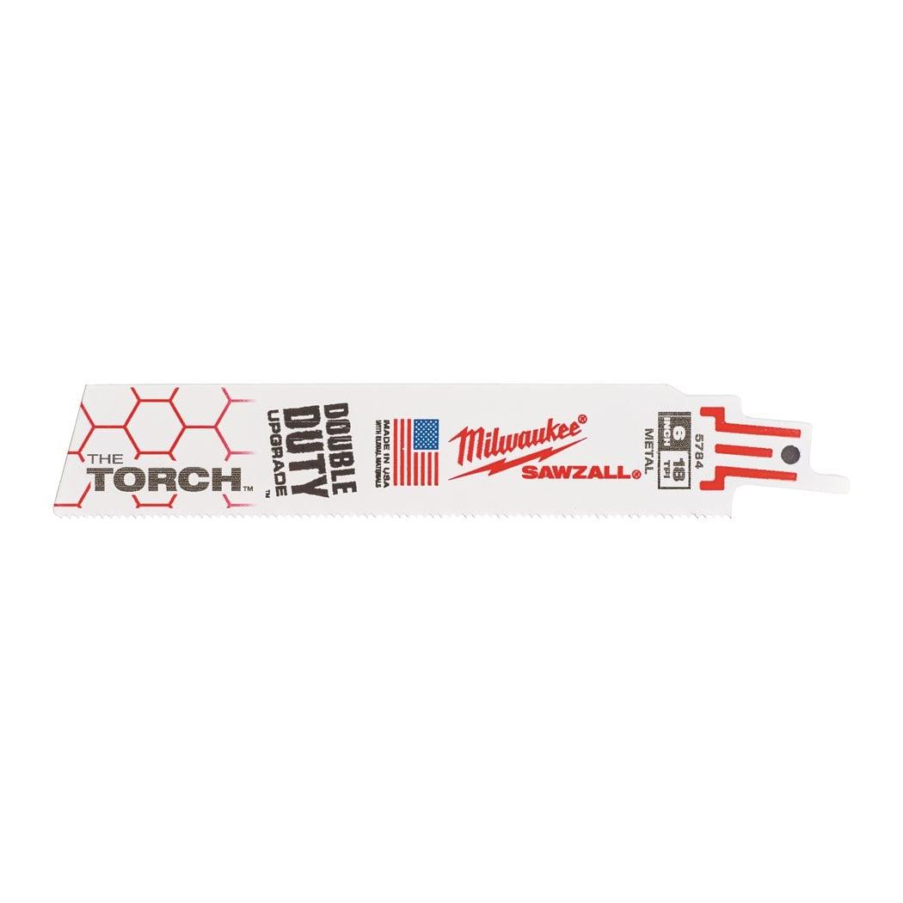

48005712

| Blade length (mm) | 150 |
| Material type | Bi-Met,Co |
| Materials suited for | Thick metal > 4 mm|Medium metal 1.5 - 4 mm|Thin metal 0.5 - 3 mm|Stainless steel|Non ferrous metal (Cu/Al) |
| Max. cutting capacity inox (mm) | 2 - 4 |
| Max. cutting capacity metal pipe ⌀ (mm) | ⌀ 10 - 100 |
| Max. cutting capacity non-ferrous metals (mm) | 1.5 - 8 |
| Max. cutting capacity stainless steel (mm) | 1.5 - 4 |
| Max. cutting capacity steel (mm) | 1.5 - 8 |
| Max. cutting capacity wood with nails (mm) | No |
| Pack quantity | 25 |
| Ref. No. | S926BEF/SS927BEF |
| Rescue | Yes |